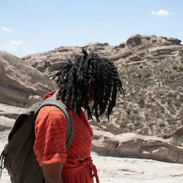

Backpacking in Alberta's Badlands
Experience the Outdoors in a New Way
Backpacking in Alberta's badlands is definitely a worthwhile experience. The kaleidoscope of sun-drenched desert scenery that you see from the top of a ridge is jaw-dropping, and exploring this canyon on foot is the best way to see it! Hoodoos are the least of the fun things you may see in the many turns and twists of this unique landscape. Poke your head in a sandstone cave or get a picture in a brilliant red dry wash. Hiking here is unparalleled. Horsethief Canyon offers a unique combination of colorful rocks and landscape, fascinating critters, and local history that is hard to find anywhere else in Alberta. Keep your eyes peeled for wildlife sightings and take photos to remember your trip. Just remember to steer clear of rattlers! Dangerous creatures like rattlesnakes are rare, but taking caution always pays off. Whether you're an experienced backpacker looking for your next adventure, or a beginner with no proper gear, there are perfect trails for everyone here.
To make the most of your backpacking trip in the canyon, it's important to know what to bring. Make sure you have all the necessary gear, including a sturdy backpack, a good pair of hiking boots, a change of clothes, a lifestraw or water bottle, and plenty of snacks. Of course, bringing a buddy is not only fun but a great precaution for safety reasons. It's also a good idea to look up the area ahead of time and plan your route. There are many great trails to choose from, ranging from a short afternoon walk to several days of strenuous but rewarding treks. Don't forget to take breaks often and enjoy the sights along the way. At the top of every ridge is a perfect selfie-shot to send home, and if you're into nature the badlands are home to many unique and fascinating plants and animals. Even small children can hike the easier trails, although they'll want to stop to climb every hoodoo and bring armloads of rocks home. With a little planning and preparation, backpacking in Alberta's badlands can be such a fun time!

Hiking or Camping?
When it comes to exploring the Badlands, there are clear differences between hiking and camping. Hiking in the Badlands allows you to traverse the unique rock formations, taking in the stunning views from the trails. You can enjoy the beauty of the area while also getting some exercise. Hiking this area is a perfect opportunity to spend a day trip or a weekend. It's a quick escape and adventure to fit into your busy work schedule. Camping, on the other hand, allows you to fully immerse yourself in the landscape and experience the quiet and solitude of the Badlands at night. With the sound of the wind in the canyon and the calm rustle of dry grass, Horsethief Canyon is as unforgettable at night as it is during the day. You can stargaze, listen to the sounds of the wilderness, and really feel like you're a part of the natural world. In addition, the canyon lacks the usual struggles of woods camping, with beautiful flat sandy ground, almost no mosquitos, and no tree roots to bend your tent pegs on. Both hiking and camping in the Badlands offer unique experiences, but it really depends on what type of adventure you're looking for.
Tenting near the Local Wildlife
When camping in Horsethief Canyon, it's important to approach wildlife with caution and respect. Keep a safe distance from any animals you may encounter, and never attempt to feed or touch them. Not only are some animals dangerous, but other, harmless, cute animals may be damaged by the smell of human hands and ostracized from their community. In addition, feeding wildlife can result in domesticated creatures that are dependent on camper's donations and no longer able to survive in their natural habitat. Store food and garbage securely in bear-resistant containers to avoid attracting nocturnal visitors to your campsite. When setting up your tent, choose a location that is at least 100 yards away from any potential food sources for animals. To get the most from your trip, avoid loud generators or electric lights. Always remember to pack out all your trash and leave the campsite cleaner than you found it. Both the local critters and following campers will be grateful. By following these guidelines, you can enjoy a safe and responsible camping experience in the canyon, coexisting peacefully with the surroundings.
Explore the most stunning hikes in Alberta
You will always have a great time hiking in Horsethief Canyon! The views, winter or summer, are absolutely stunning and being up high will make you feel so alive and free. Although the longer hikes can be a challenge, it is totally worth it and I would highly recommend this hike to anyone looking for an adventure. Getting to the top of a rise after a climb is so thrilling, the view is worth the effort. Being surrounded by nature and forgetting about the stresses of everyday life is peaceful and rejuvenating. If you're looking for a way to escape the city and find some freedom, Horsethief Canyon is a must-see!
Book Now